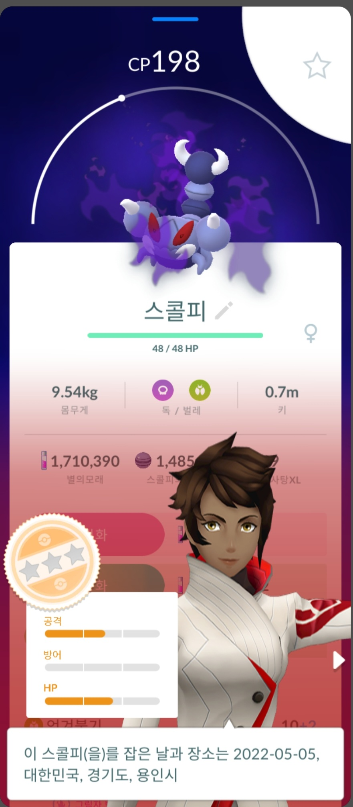
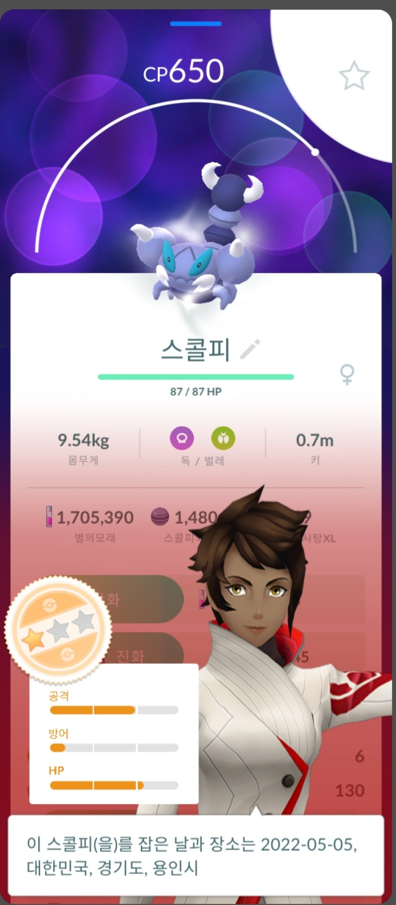

포켓몬고에서는 개체값이 바뀌는 경우가 두가지 있습니다.
바로 교환과 정화입니다.
개체값을 바꿀수 있다는 것은 고개체를 얻을 기회가 늘어난다는 것입니다.
잘 활용해서 고개체를 얻으시는 것을 추천드립니다.
다른 플레이어와 교환을 하면 개체값이 랜덤하게 바뀝니다.
교환을 하다보면 가끔 반짝반짝 포켓몬이 되는데
반짝반짝 포켓몬은 개체가 (12, 12, 12)이상으로 보정이 되기 때문에
고개체를 얻기 쉬워집니다.
희귀한 포켓몬들은 교환으로 고개체를 노려보도록합시다.
정화도 개체값이 변합니다
교환과는 달리 규칙적으로 변하게 됩니다.
정화를 하면 공격, 방어, 체력 모두가 2씩 오르게 결정됩니다
예를 들면 13 13 13 개체값을 가진 그림자 포켓몬을 정화하면
15 15 15 개체값으로 변하게 됩니다.
저개체 였던 포켓몬이 고개체로 바뀔 수 있습니다.

위 사진은 정화를 한 후 개체값이 바뀐 예시 입니다.
제가 가장 추천드리는 방법은 교환입니다.
이벤트마다 필요한 포켓몬을 교환하여 고개체를 노려봅시다.